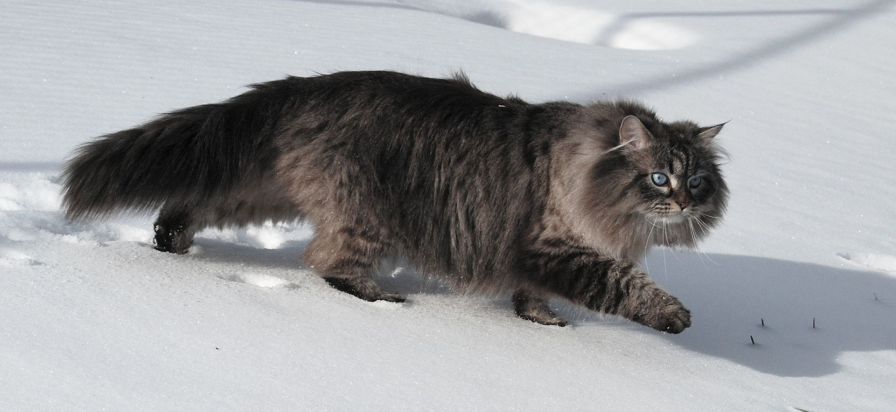

Зачастую, шерсть кошек выглядит как дорогой шелк и не просто так, ведь многие хозяева заботятся о своих питомцах, покупая дорогой шампунь и другие уходовые средства. Корм для кошек тоже нужно выбирать тщательнее, ведь, кормя своего любимого пушистого друга дешевым кормом, можно не только довести кота до болезней, но и испортить ему жизнь. Многие хозяева ошибочно считают, что прогулка на свежем воздухе только испортит здоровье хвостатого и редко отпускают своих котов прогуляться, но это крайне небезопасно для кота.
Вычёсывание: 1–2 раза в неделю (для короткошёрстных), ежедневно — для густых и длинношёрстных; в период линьки — чаще. Купание: только при сильном загрязнении, не чаще 1–2 раз в 2 месяца; использовать спецшампуни. Чистка ушей: по мере загрязнения, только внешняя часть раковины; спецсредства из зоомагазина, проточная вода или средства, используемые для людей, могут навредить слуху кошки. Чистка зубов: ежедневно или через день, спецщёткой и пастой. Стрижка когтей: примерно раз в месяц, аккуратно, не задевая пульпу.
Не стоит так же забывать о обязательном, профессиональном уходе за своим любимчиком, ведь, без него, возрастает риск многих осложнений и появлении новых болезней. Самый базовый минимум для хозяев, это: Профилактические осмотры — 1–2 раза в год. Вакцинация по графику (в т. ч. ежегодная от бешенства). Дегельминтизация — каждые 3–6 месяцев. Обработка от эктопаразитов (блох, клещей) — по сезону и риску.
Чаще всего, хозяева даже не задумываются о том, что кошка может заболеть, поэтому и не обращают внимания на их изменения. Некоторые из них, могут показать, что именно происходит с их любимым питомцем, именно поэтому нужно следить за всеми, даже малейшими несостыковками в обычной жизни питомца: 1) Аппетит и питьевой режим. 2)Состояние шерсти, глаз, ушей, носа, подушечек лап. 3)Характер мочеиспускания и дефекации. 4)Поведение (активность, сон, реакция на окружение). Важно: при любых изменениях в поведении или здоровье — консультация ветеринара.